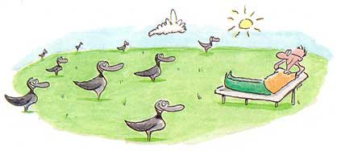

"Did Seattle win last night?" my friend Ernst, the animal psychologist, asked during brunch at my place.
"How should I know?" I snapped back. "The morning paper isn't here yet. I hate when that happens. Messes up my whole Sunday routine."
"You should not be so set in your ways," my friend counseled. "You have to adapt to the environment. Like animals adapt. They have to or face extinction."
"You think I should get with it - read the news on handheld computers rather than flattened trees."
"It's all a matter of information-format conditioning," Ernst began, easing back into the lounge chair. I hate it when he waxes professorial. "Take the early Greeks..." he began."No thanks," I retorted. "...they were very upset when the written word was discovered. What was going to happen to all those epic story-poems told by heart? And when books first came out, the Romans must have missed unwinding with a good scroll."
"Hey look, I didn't ask for a lecture. I only want my morning paper in the morning, not the afternoon. Okay?"
"We all have to adapt to changing times," Ernst persisted. "Take animals, for instance. They're too slow. Look at roadkill."
"I usually try not to. But, okay. I can see where you're going - roadkill would have to continue for a million years before animals know to 'stop, look and listen' before they cross the street. Is that it?"
"Something like that. Animals can figure out how to live around cities. But they can't get the concept of roads. They're wired to go from one place to another the same way, over and over, no matter what's in the way."
"Right. Plop your garden across a snake's migratory path and he could give a hiss about detours and alternate routes."
"Exactly. But I have a different theory on deer/car collisions. It's more about territory than traffic flow. You know how you'd feel if a herd of turtles marched through your front room to get to their traditional mating grounds. I'm convinced deer feel the same way about cars zooming through their range. Mind you, this is only a hypothesis," Ernst cautioned. "But, I think they're actually trying to attack cars."
"You're thinking Kamikaze deer squads?"
"Perhaps - but with a much higher failure rate. It's got to be very difficult to get the timing right. I mean, how would you practice hitting something going 70 miles per hour? All these poor creatures can do is wait by the side of the road and zoom out at the last minute, head down, aiming for the side door. Sometimes they jump the gun and shoot by in front. Sometimes the slower ones scoot by in back. You never see those."
"So in effect, in evolutionary terms," I summarized, "we're selecting for the slowest, least coordinated deer - dumbing down the population."
"Precisely. But at least the species will survive. It's about adaptation."
"Ha!" I replied. Sometimes that's all I can think of to say to my erudite buddy.
"Speaking of roads and wildlife," I continued, trying to change. "A couple of weeks ago I saw a duck crash-land on a wet asphalt road."
"Probably the rain made it look like a shiny lake surface. That's a perfect illustration of a cross-generational training problem. Mother ducks don't have a way to tell their kids, 'don't do what your dad just did.' Each one has to learn for himself."
At that point a squadron of Canada geese honked on by. "Maybe Canada geese are different," I suggested. "They talk all the time when they're flying."
"I've got another theory on that," Ernst announced over his third cup of coffee. "I think Canada geese must have superb interflock communication patterns. Look how they fly in such energy-efficient formations."
"So, you think the haunting sound of the wild goose as it silhouettes against a harvest moon is really a mother saying things like, 'I told you to take a left at Wisconsin but no, you had to just wing it for a while."'
"You are obviously taking my theory to an extreme," Ernst replied, slightly offended. "But, you have to admit, as a species, Canada geese must have a superior form of in-service training."
"Since you brought up the subject," I jumped in, "I've my own plan for outguessing a goose. I saw some wild goose decoys for sale. Instead of putting them in the water to attract company, like hunters do, I'm going to spread them all over my lawn and dock so there's no room to land. If I'm going to have geese all over my yard they might as well not leave signs of their passing. Let's see them adapt to that!"
|
 ILLUSTRATION: STEVE PICA Canadian geese have some highly evolved communication and migration patterns. |
|
|